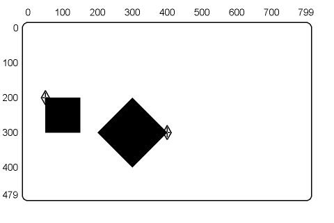
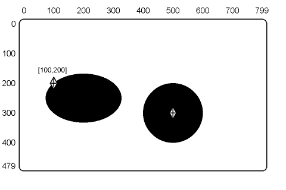
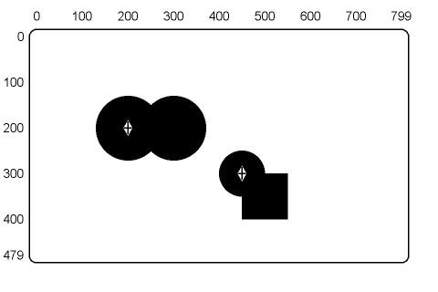
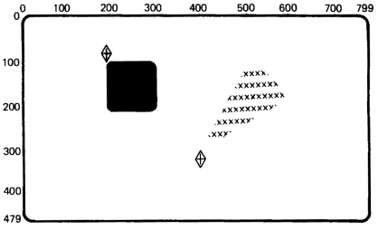
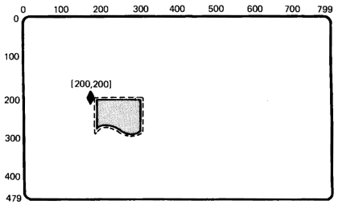

| Chapter 10 | Contents | Chapter 12 |
| Chapter 10 | Contents | Chapter 12 |
You use the polygon fill command to draw filled-in, closed objects such as circles, ellipses, triangles, and squares. Polygon fill commands start with the key letter F. There are four basic options to the F command.
The polygon fill command uses the current foreground color specified to fill in figures (Chapters 2 and 3).
The polygon fill command accepts all vector command options and arguments. This feature lets you draw filled-in objects such as squares, rectangles, and diamonds. Chapter 5 describes all the vector command options.
You use the following basic format of a polygon fill command with a vector option.
F(V<positions>)
where
F identifies a polygon fill command.
V identifies the vector option.
<positions> are the positions of the polygon's vertices.
Figure 11-1 shows a filled-in square and a filled-in diamond. These objects are drawn with a polygon fill command using the vector option and B suboption.
|  | ||||||
|
|
|||||
The polygon fill command accepts all curve command options and arguments. This feature lets you draw filled-in circles, arcs, and other curved objects. Chapter 6 describes all the curve command options.
You use the following basic format for a polygon fill command with curve options.
F(C<positions>)
where
C identifies the curve option.
<positions> are coordinate values for a curve or circle. To use a curve, you include the (B) and (E) options. See Chapter 6 for the format of curve command options.
Figure 11-2 shows a filled-in ellipse and a filled-in circle. The circle is drawn using the polygon fill command with the circle option. The ellipse is drawn using the polygon fill command with the closed curve option.
|  | ||||||
|
|
|||||
The polygon fill command accepts all position command options and arguments. Remember, position options do not draw graphic images as do the curve and vector options. You can use the position option to connect vectors, curves, and arcs. Chapter 3 describes the position command. Chapter 6 describes the curve command and its options.
You can use the P option (with the open curve function of the curve option) to set the slope at the two endpoints of an open curve. You can also use the P option to reset the cursor position before and after an arc with its center at the current position.
You use the following basic format for a polygon fill command with the position and curve options.
F(C(A+<degrees>)<position1>P<position2>...)
where
C identifies a curve option.
A identifies an arc suboption.
<degrees> specifies the number of degrees and the direction to draw the arc in.
<position1> is the point where the arc will start.
P identifies a position option.
<position2> is the new active position.
Figure 11-3 shows filled-in, connected arcs and a filled-in, connected arc and rectangle. The connected arcs are drawn with the polygon fill command, position option, and open curve option. The connected arc and rectangle are drawn with the polygon fill command, position option, vector option, and open curve option.
|  | ||||||
|
|
|||||
The polygon fill command accepts all write command options and arguments. There are two ways to use temporary write controls with the polygon fill command.
Chapter 3 describes the write control command and its options.
Temporary Write Control as an Option of the F Command
F(W(<suboption>)<options>)
where
W identifies a temporary write control option.
<suboptions> are the temporary write control values to use.
<options> are polygon fill command options that will use the temporary write control values.
Temporary Write Control as a Suboption of the C or V options
F(C(W(<sub-suboptions>)<suboptions>)<options>)
where
C identifies a curve option. You could also use a vector (V) option.
W identifies a temporary write control suboption.
<sub-suboptions> are the temporary write control values to use.
<suboptions> are the curve options and values that will use the temporary write control values.
<options> are any other polygon fill command options.
Only the last W option in a polygon fill command affects the graphic image. Other W options have no effect, because ReGIS does not draw the image until the end of the polygon fill command. The one exception is when you use pixel vector multiplication as a suboption of the W option.
Figure 11-4 shows a pie segment filled with Xs, and a filled-in box with rounded corners. The pie segment is drawn with the polygon fill command, temporary write control option (with the S suboption), vector option, and open curve option. The box with rounded corners is drawn with the polygon fill command, temporary write control option (with the I suboption), vector option, and open curve option.
|  | ||||||
|
|
|||||
You can use the commands in this chapter to fill simple or complex polygons. However, a complex polygon requires more planning. You should build your command string in steps. The following method is one example.
Build a ReGIS command string that draws the outline of the desired polygon. This command string may use vector, curve, and position commands. The outline should be a single, closed figure. The outline must not have any gaps or cross over itself.
Enclose the command string from step 1 in an F command.
F(<ReGIS command string>)
If you want your polygon to have a contrasting outline, you can use a macrograph.
| @:A<ReGIS commands>@; | ;Loads macrograph. |
| F(@A) | ;Fills polygon. |
| @A | ;Draws outline. |
Chapter 9 describes the macrograph command and its options.
Figure 11-5 shows a filled paper icon with a dotted outline. This image is drawn with a polygon fill command using the curve option, vector option, temporary write control option, and macrographs.
|  | ||||||
|
|
|||||
You should consider the following points when you use the polygon fill command.
Vertices
You must specify at least three different vertices, or ReGIS will not
draw an image. You can use up to 256 vertices. ReGIS ignores additional
vertices. If you map two consecutive vertices to the same
pixel, they count as one vertex.
NOTE: Each argument for the vector option creates one vertex. Each argument for the curve option can create more than one vertex.
Closed Figures
If your commands do not create a closed polygon, the results of the
polygon fill command are unpredictable.
Perimeter
In some cases, the outline of the filled polygon may not line up exactly
with the vectors that connect the same vertices. You should
draw a border after the filled area.
Single Closed Figures
You should only use the polygon fill command to fill single closed
figures. The F command is not designed to fill polygons made of
intersecting groups of single closed figures. Although the F command
can fill these polygons, the results are unpredictable.
Current Position
ReGIS saves the cursor position at the beginning of any polygon fill
command. The cursor returns to this position at the end of the command
(whether or not any drawing takes place). This feature provides
some compatibility with devices that do not have the F
command.
Position Stack Options (B and E)
Any polygon fill command string that changes the position stack is
not compatible with ReGIS devices that do not have the F
command.
Table 11-1 is a summary of the F command options. There are no default values for these options.
| Option | Description |
|---|---|
| F(V<positions>) | Vector option |
| F(C<positions>) | Curve option |
| F(C(A+<degrees>) <position1> P<position2>...) | Position option (with curve option) |
| F(W(<suboptions>) <options>) | Temporary Write Control as an Option of the F Command |
| F(C(W<sub-suboptions>) <suboptions>) <options>) | Temporary Write Control as a Suboption of the C or V Options |